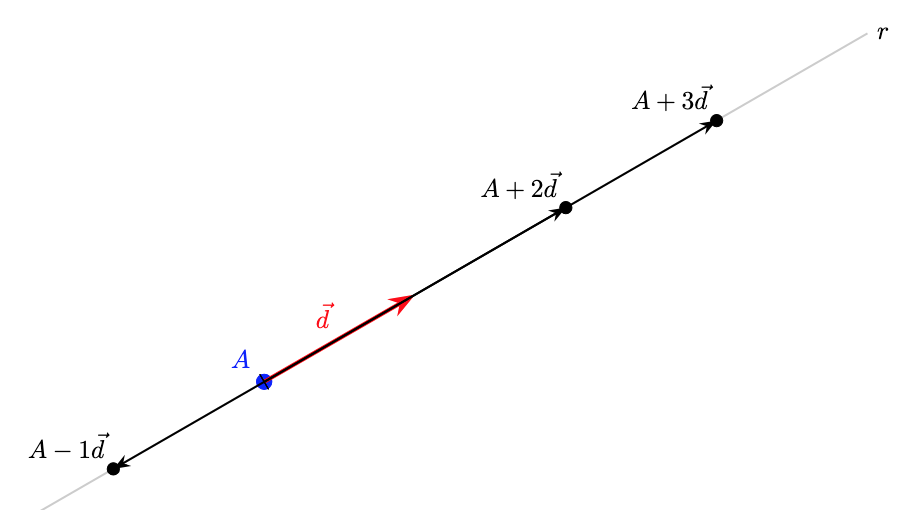
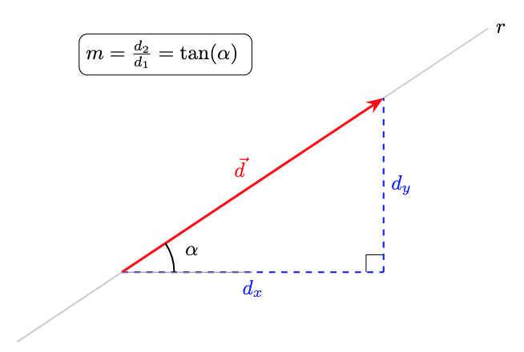
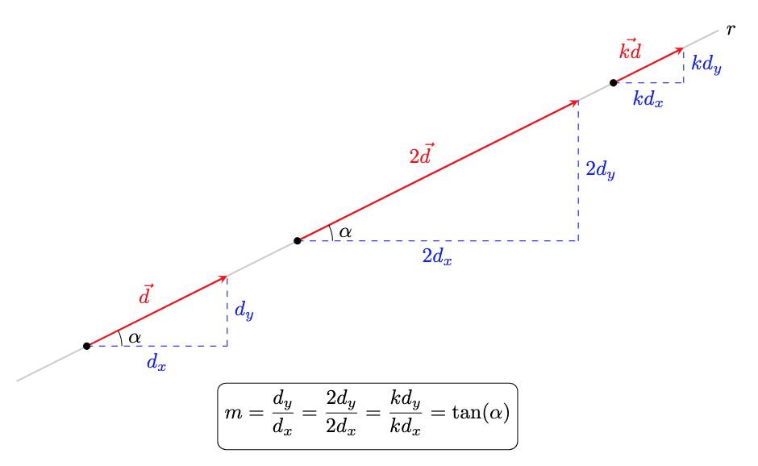
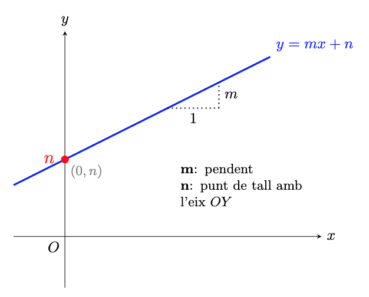

Equacions de la recta al pla
Ara que ja sabem treballar amb els punts del pla utilitzant coordenades, ens cal poder fer-ho amb un altre objecte geomètric fonamental: la recta. Per determinar una recta de forma única al pla, necessitem conèixer:
- Un punt de la recta: \(A(x_A, y_A)\)
- Una direcció, donada per un vector director: \(\vec{d} = (d_1, d_2)\)
Alternativament, també podem determinar una recta si sabem dos punts per on passa. En aquest cas, calculant el vector entre els dos punts, ja tenim la direcció de la recta.
En aquest apartat, l'objectiu és descriure les rectes mitjançant equacions. O sigui, donada una recta, volem una equació que tingui com a solució tots els punts de la recta.
Veurem que tenim diferents tipus d'equacions per representar qualsevol recta
1. Equació vectorial
L'equació vectorial es basa en la idea que qualsevol punt \(X(x, y)\) de la recta s'obté sumant al punt \(A\) (un punt qualsevol de la recta) un múltiple del vector director \(\vec{d}\) (un vector director de la recta).
En coordenades:
Interpretació
Si anem variant el valor de \(k\), ens anem movent al llarg de la recta. Per exemple, per \(k=0\) som al punt \(A\), per \(k=1\) som al punt \(A+\vec{d}\), per \(k=2\) som al punt \(A+2\vec{d}\)... i així per a qualevol valor de \(k\).

2. Equacions paramètriques
A partir de l'equació vectorial, si la descomponem component a component, obtenim un sistema de dues equacions que anomenem paramètriques:
Exemple
Volem les equacions vectorial i paramètrica de la recta que passa pel punt \(A(1, 2)\) i té com a vector director \(\vec{d}(3, 4)\):
-
Equació vectorial:
\[(x, y) = (1, 2) + k \cdot (3, 4)\] -
Equació paramètrica:
\[ \begin{cases} x = 1 + 3k \\ y = 2 + 4k \end{cases} \]
Per exemple,
- (eq. paramètrica) Si \(k=2\), obtenim el punt \(P(7, 10)\), ja que: \(x = 1 + 3(2) = 7\) i \(y = 2 + 4(2) = 10\).
- (eq. vectorial) Si \(k =-1\), obtenim el punt \(P(-2,-2)\), ja que \((x,y)=(1,2)-1\cdot (3,4)=(1,2)-(3,4)=(-2,-2)\).
3. Equació contínua
Si aïllem el paràmetre \(k\) en les dues equacions paramètriques i igualem els resultats, obtenim l'equació contínua:
Atenció
Aquesta equació només es pot fer servir si les dues components del vector director són diferents de zero \((d_1 \neq 0, d_2 \neq 0)\).
Pas a l'equació contínua
Si aïllem el paràmetre \(k\) a les equacions paramètriques de l'exemple anterior:
- \(x = 1 + 3k \implies k = \displaystyle\frac{x - 1}{3}\)
- \(y = 2 + 4k \implies k = \displaystyle \frac{y - 2}{4}\)
Igualant les dues expressions, obtenim l'equació contínua:
4. Equació punt-pendent
Per obtenir l'equació punt pendent, partim de la contínua i passem a l'altre membre de l'equació \(d_2\):
El quocient \(m=\displaystyle\frac{d_2}{d_1}\) és el pendent de la recta. I, de fet, tenim que \(\mathbf{ m= tan(\alpha) }\), on \(\alpha\) és l'angle de la recta respecte de la horitzontal:

Observem que, per semblança de triangles, el pendent (tangent d'\(\alpha\)) de la recta no canvia sigui quin sigui el vector director. El pendent (inclinació) de la recta només depèn de l'angle \(\alpha\):

Alguns casos particulars:
- Si \(m=0\), llavors \(d_y=0\) i la recta és horitzontal.
- Si \(m=1\), llavors \(d_x=d_y\) i la recta te un angle \(\alpha=45^{\circ}\) respecte l'horitzontal.
També podem observar que si \(d_x=1\), llavors \(m=d_y\) i tenim que:
Si \(m\) és el pendent d'una recta \(\implies\) \(\vec{d}=(1,m)\) és vector director de la recta.
Interpretació del pendent (\(\mathbf{m}\))
Amb el que acabem de veure, podem interpretar que, per cada unitat que augmentem horitzontalment, n'augmentem \(m\) verticalment.
Exemple: equació a partir del pendent (o la direcció)
Seguim les dades dels exemples anteriors:
- Punt: \(A(1, 2)\)
-
Pendent: \(m = \displaystyle\frac{4}{3}\) (recorda que això ve del vector \(\vec{d}(3, 4)\))
-
L'equació punt-pendent té la forma:
- Substituïm \(x_a = 1\), \(y_a = 2\) i \(m = 4/3\):
Exemple: equació a partir de l'angle
Volem trobar l'equació de la recta que passa pel punt \(A(2, 1)\) i forma un angle de \(30^\circ\) respecte de l'horitzontal.
- El pendent és la tangent de l'angle d'inclinació:
- Substituïm el punt \(A(2, 1)\) i el pendent \(m = \frac{\sqrt{3}}{3}\) a la fórmula:
- I si necessitem un vector director?
Ja hem vist que \((1,m)\) és vector director, per tant, \((1,\displaystyle\frac{\sqrt{3}}{3})\) ho és.
En veritat, qualsevol vector proporcional a aquest ens serviria:
5. Equació explícita
Si aïllem completament la \(y\) de l'equació anterior, obtenim l'equació explícita de la recta, que per altra banda és la forma més habitual en què trobem les funcions lineals:
- \(\mathbf{m}\): Pendent.
- \(\mathbf{n}\): Ordenada a l'origen. Observem que per a \(x=0\), tenim que \(y=n\), o sigui \((0,n)\) és el punt de tall de la recta amb l'eix d'ordenades \(OY\).
Vegem-ho gràficament:

Exemple: pas a l'equació explícita
D'una recta que passa per \(A(1, 2)\) amb \(m = 4/3\):
- Punt-pendent: \(y - 2 = \displaystyle\frac{4}{3}(x - 1)\)
- Operem: \(y - 2 = \displaystyle\frac{4}{3}x - \frac{4}{3}\)
- Aïllem: \(y = \displaystyle\frac{4}{3}x - \frac{4}{3} + 2\)
Equació Explícita:
- On el tall amb l'eix \(OY\) és \(n = 2/3\).
6. Equació implícita (o general)
Si passem tots els termes a un costat de la igualtat per deixar-la igualada a zero, obtenim la forma general:
Si ho fem a partir de l'equació continua (des de l'explícita seria similar) tenim que:
Del que acabem de veure, podem deduir la següent informació:
- Un vector director és \(\vec{d} = (-B, A)\).
- El pendent és \(m = -\frac{A}{B}\).
- Un vector normal (perpendicular a la recta) és \(\vec{n} = (A, B)\).
Observem que el producte escalar \(\vec{d}\cdot \vec{n}=0\)
L'exemple complet
Troba les equacions de la recta que passa per \(A(1, 2)\) amb vector director \(\vec{d}(3, 4)\):
- Vectorial: \((x, y) = (1, 2) + k(3, 4)\)
- Paramètrica: \(\begin{cases} x = 1 + 3k \\ y = 2 + 4k \end{cases}\)
- Contínua: \(\frac{x-1}{3} = \frac{y-2}{4}\)
- Punt-pendent: \(y - 2 = \frac{4}{3}(x - 1)\)
- Explícita: \(y = \frac{4}{3}x + \frac{2}{3}\)
- Implícita o general: \(4x - 3y + 2 = 0\)